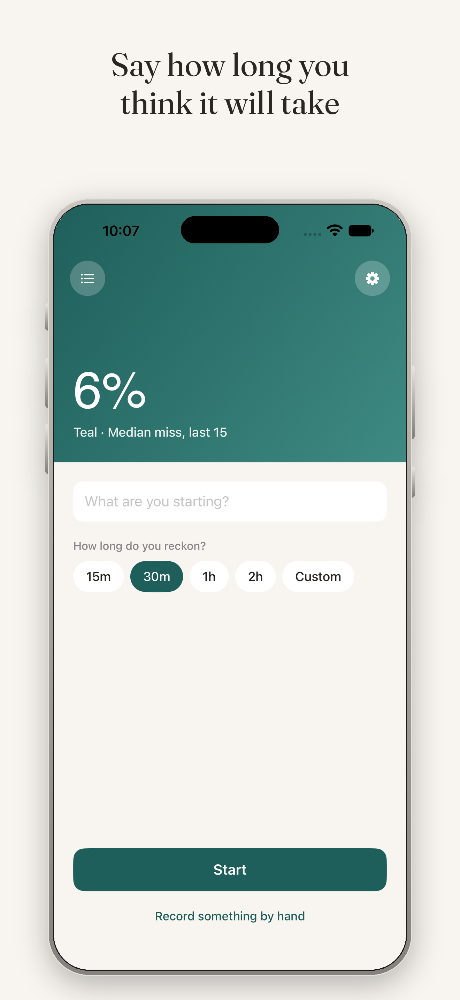
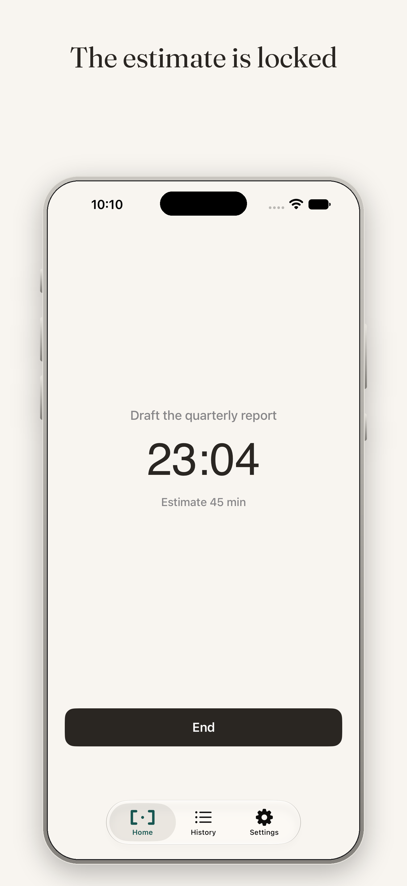
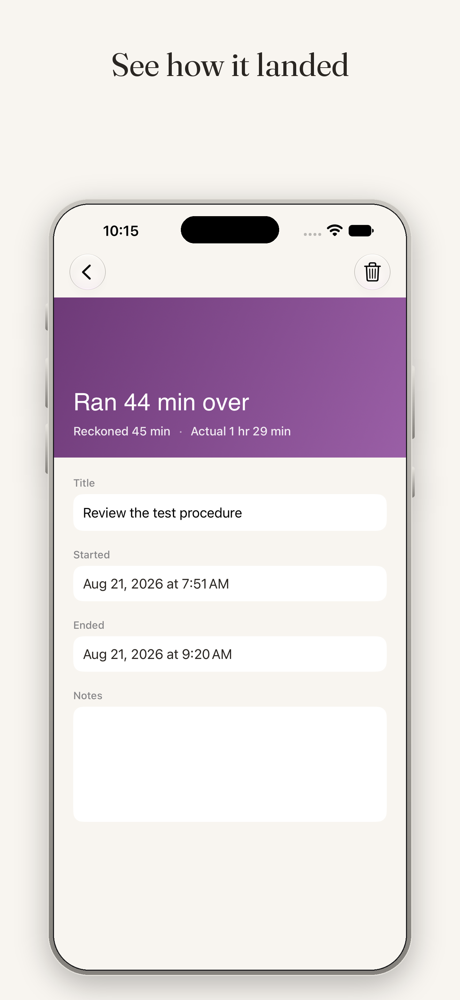
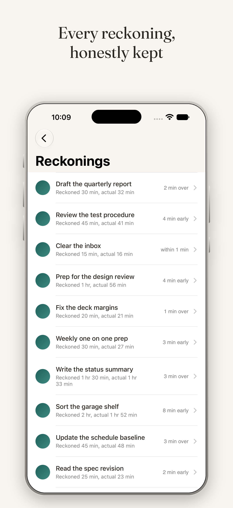
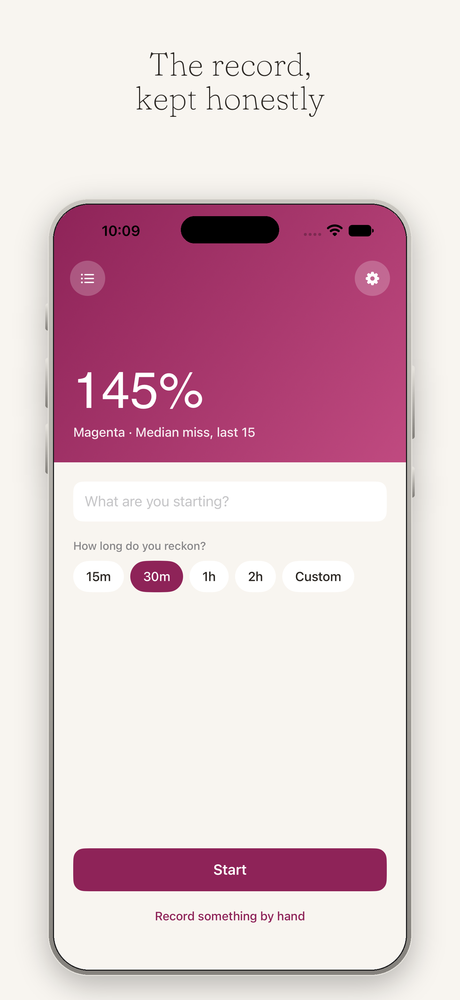
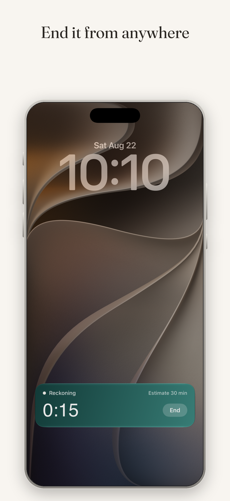
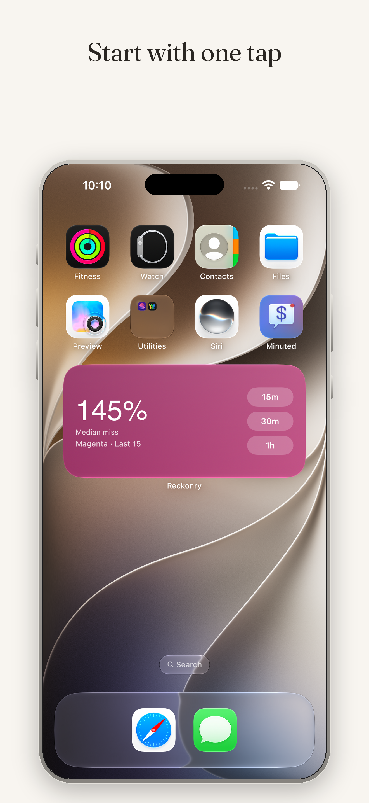

Record what you reckon before you start.
Say how long you think a task will take. Do the work. See the gap between the two. Reckonry keeps the record and stays quiet about it.
The color is the size of the miss. Nothing else.
How it works
Three moments, and only three.
Commit to a number
Pick a duration and start. Two taps from a cold launch, or one from the widget, Control Center, or Siri.
The estimate is locked
A Live Activity keeps the clock on your lock screen. You cannot revise what you thought, which is the entire point.
See how it landed
The gap, stated plainly, in words rather than a number to beat. Name it, add a note if you want, and move on.
The divergence arc
Color carries the size of the miss.
Every reckoning lands somewhere on a five-stage arc, set by how far the actual ran from the estimate. Finishing early and finishing late are the same event: you did not know.
The home screen carries your median miss across the last fifteen reckonings, so the whole app takes on the color of how your estimates have actually been going. It is a reading, not a grade.
The app
Built for one job, on every surface you already use.







What it refuses to do
The restraint is the product.
Every estimate tracker eventually becomes a productivity scoreboard. Reckonry will not, and these exclusions are permanent.
- No accuracy score or grade
- No streaks to protect
- No AI insights or coaching
- No suggested estimates
- No progress bar racing your deadline
- No leaderboards or ranking
- No trends telling you what you are
- No notifications nagging you
A prediction you made honestly is worth more than one the app helped you get right. Reckonry preserves what you thought, not what you should have thought.
Privacy
Your record never leaves your devices.
Reckonry stores everything on your iPhone and syncs through your own iCloud account. There are no accounts to create, no servers to trust, and no analytics of any kind. Nobody at KSQ Studios can see a single reckoning you have made.